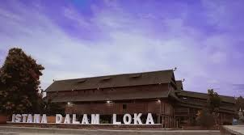
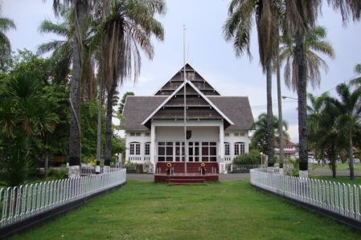
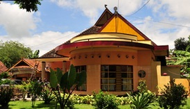
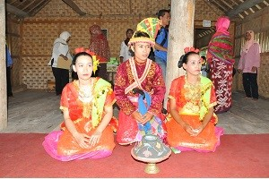
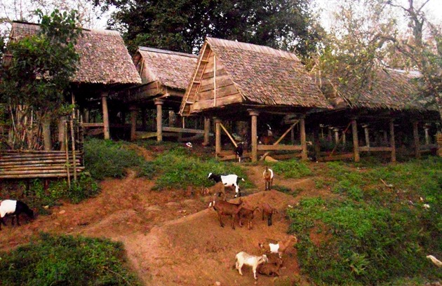
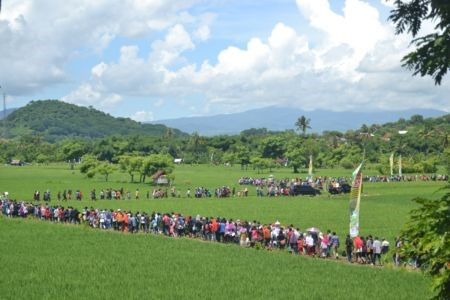

1. Istana dalam loka

provinsi NTB miliki wisata religi yang terletak di Sumbawa Besar yakni Istana Dalam Loka. Istana itu pun merupakan rumah Sultan Sumbawa yang syarat akan makna Islam. Istana Dalam Loka terletak di pusat Kota Sumbawa yang berdampingan dengan Masjid Agung Sumbawa. Sehingga tidak sulit untuk mencari lokasi bangunan ini. BACA JUGA: Warga Pariaman Diambil Sampel DNA untuk Identifikasi Korban Tewas Lapas Tangerang Selain bentuknya yang sangat mencolok di antara bangunan-bangunan lain di sekelilingnya. Bangunan ini dulunya merupakan tempat tinggal Sultan Sumbawa dan tempat pemerintahannya. Istana itu didesain dengan rumah panggung yang keseluruhan bangunan terbuat dari kayu jati yang hingga kini masih kokoh berdiri. Istana ini konon dibuat berdasarkan kepercayaan agama Islam. BACA JUGA: Siklon Tropis Laut Filiphina, Waspadai Gelombang Tinggi di Selat Makassar Bangunan itu, dibuat selama 9 bulan 10 hari yang ternyata bermaksa mengandung anaknya selama 9 bulan 10 hari. Tiang bangunan Istana Dalam Loka terdiri dari 99 tiang yang berarti 99 asmaul husna. Kemudian 13 ruangan yakni 13 rukun shalat. Selanjutnya, 21 pintu makna malam lailatul qadar. Tujuh hiasan bergantung di sisi istana mengartikan surah Alfatiha.
2. Wisma Praja

Wisma Praja atau biasa disebut Wisma Daerah merupakan istana yang dibangun oleh Belanda pada tahun 1932.
Istana ini merupakan tempat kediaman terakhir Sultan Kaharuddin III dalam menjalankan kegiatan pemerintahan.
Sekarang bangunan istana yang kokoh ini digunakan sebagai tempat penerimaan tamu – tamu agung dan kegiatan – kegiatan upacara maupun resepsi yang bersifat formal, rapat kordinasi serta pertemuan oleh Pemerintah Kabupaten Sumbawa.
Hingga kini bangunannya tetap terawat. Bahkan di halamannya berkeliaran sejumlah rusa yang menjadi ciri khas Sumbawa
3. Bala Kuning

Bala kuning merupakan rumah tempat tinggal keluarga Sultan Sumbawa yang terakhir. Lokasinya berada di tengah kota Sumbawa Besar atau sekitar 100 meter dari Wisma Praja.
Di sini dapat dijumpai benda-benda magis peninggalan kerajaan, seperti Bodong, Sarpedang, Payung Kamutar, Tear ( tombak /lembing ), Keris, Al Qur’an tulisan tangan Muhammad Ibnu Abdullah Al-Jawi.
Kitab suci umat Islam ini ditulis sekitar tahun 1784 pada masa pemerintahan Sultan Harrunnurrasyid II (1770 – 1790), yang selalu terpelihara dengan baik.
4. Dusun Pamulung

Salah satu dusun yang termasuk dalam Wilayah Desa Karang Dima Kecamatan Labuan Badas, terletak sekitar 8 km dari kota Sumbawa Besar Kabupaten Sumbawa Provinsi Nusa Tenggara Barat (NTB).
Dusun ini merupakan lokasi yang sudah ditetapkan sebagai desa wisata Sumbawa. Di lokasi tersebut dapat disaksikan berbagai atraksi budaya daerah, seperti Karaci, Barapan Kebo, tari-tarian tradisional yang diiringi dengan musik.
Setiap wisatawan akan disajikan atraksi-atraksi budaya Sumbawa yang diorganisir oleh manajemen Tambora Hotel Sumbawa.
Setiap tahun lokasi tersebut selalu menjadi langganan wisatawan mancanegara.
5. Desa Tepal

Desa tradisional yang terletak + 37 km dari pusat kota, masuk dalam wilayah Kecamatan Batu Lanteh Kabupaten Sumbawa Provinsi Nusa Tenggara Barat (NTB).
Desa ini dapat ditempuh dengan menggunakan kendaraan jeep hardtop atau truk. Desa Tepal menyimpan banyak budaya tradisional , karena masyarakatnya masih memegang teguh adat istiadat dan Budaya Samawa.
Ini dapat dilihat dari cara berpakaian, cara hidup dan bentuk rumah yang unik, sehingga desa ini disebut juga Desa Adat
6. Desa Poto

Desa Poto Kecamatan Moyo Hilir, di Kabupaten Sumbawa, Nusa Tenggara Barat (NTB), ditetapkan sebagai salah satu dari 10 desa percontohan pemajuan kebudayaan.
Desa ini dijadikan sebagai lokasi percontohan Desa Berhulu Kebudayaan di Sumbawa berdasarkan hasil dokumen Pokok Pikiran Kebudayaan Daerah (PPKD),
yang dijabarkan dalam 10 Objek Pemajuan Kebudayaan (OPK) yang terdiri dari tradisi lisan, manuskrip, adat istiadat, ritual, pengetahuan tradisional, teknologi tradisional, seni bahasa, permainan rakyat, dan olahraga tradisional.
Desa Poto memang sudah lama dikenal sebagai sentra wisata budaya dan tenun tradisional di Kabupaten Sumbawa. Terjaganya adat dan budaya di Desa Poto merupakan buah dari upaya berbagai pihak dalam melestarikan dan mengokohkan adat yang sudah berlangsung ratusan tahun lamanya. Desa Poto Sebagai Desa Wisata Budaya dan Pelopor Destinasi Wisata halal di Sumbawa Gubernur NTB.